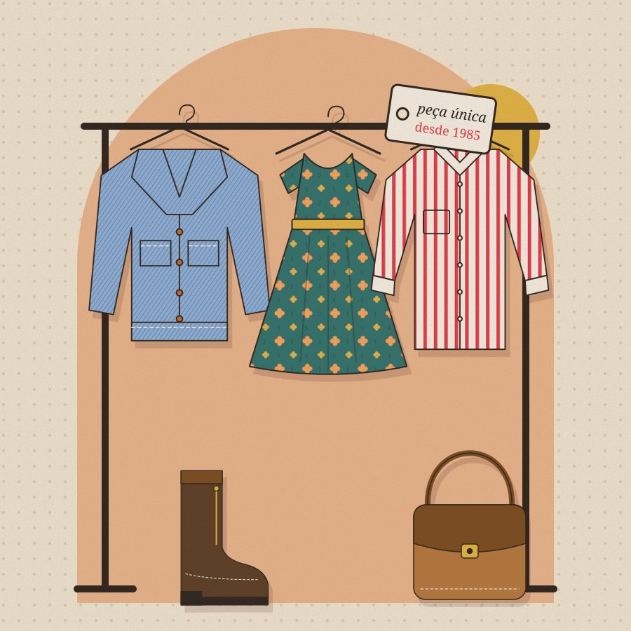
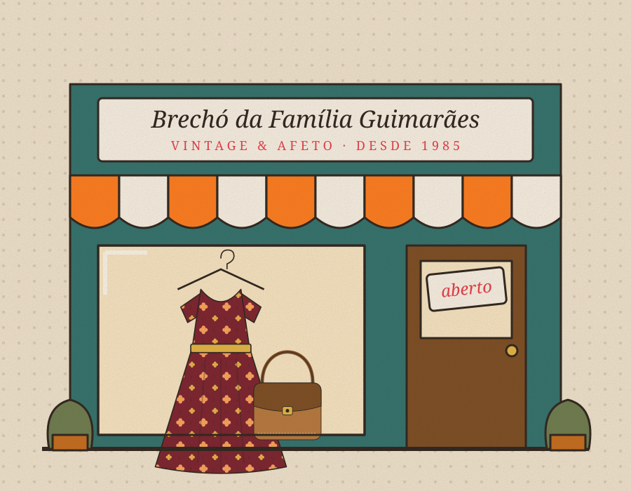

Peças com história, escolhidas com afeto.
Roupas, bolsas, louças, discos e livros garimpados por três gerações da Família Guimarães. Cada peça é única, higienizada e pronta para começar um novo capítulo com você.


Três gerações cuidando do que merece continuar.
O Brechó da Família Guimarães nasceu em 1985, quando Dona Maria começou a revender, na garagem de casa, as peças especiais que encontrava em feiras e viagens. O que era um hobby virou ponto de encontro do bairro.
Hoje filhos e netos seguem o mesmo ritual: escolher com calma, lavar, consertar o que precisa e contar a história de cada item. Nada de estoque infinito — só peças únicas, com alma.
“Roupa boa não tem prazo de validade. Tem dono novo.”
— Dona Maria Guimarães
- 1985Dona Maria abre o brechó na garagem de casa, com uma arara e muita conversa.
- 2003A filha Helena assume a curadoria e traz louças, discos e livros para o acervo.
- HojeOs netos levam o brechó para o digital, com reserva pelo WhatsApp e envio para todo o Brasil.
Garimpe por departamento
Do vestido de festa à xícara da avó: tudo separado com carinho para você encontrar o seu achado.
Chegaram agora e não vão durar
Simples como conversar com a família
Sem cadastro e sem pagamento no site. A gente conversa, confirma e separa a sua peça.
Escolha
Navegue pelo acervo, filtre por tamanho, década e preço e coloque suas favoritas na sacola.
Reserve pelo WhatsApp
Finalize a sacola: a lista com códigos e total vai pronta para a nossa conversa. Guardamos por 48 h.
Retire ou receba
Busque no brechó em horário combinado ou receba em casa, embalado em papel de seda e com bilhetinho.
Histórias que continuam
“Achei um vestido idêntico ao que minha mãe usou no noivado. Chegou cheiroso, com bilhete escrito à mão.”
“Atendimento de família mesmo: me mandaram foto da etiqueta e medidas antes de eu reservar a jaqueta.”
“Montei a mesa de café da tarde inteira com as louças daqui. Todo mundo pergunta onde comprei.”
* Depoimentos ilustrativos (exemplos) criados para este projeto demonstrativo.
Procurando algo especial?
Conte o que você procura — tamanho, década, estilo — e avisamos quando chegar uma peça com a sua cara.